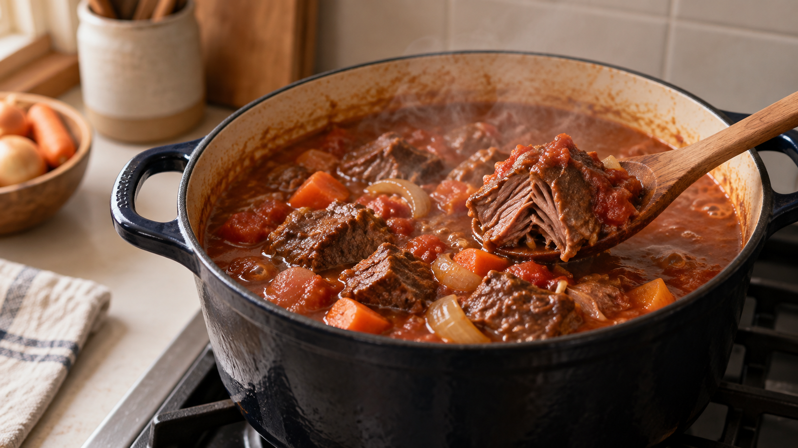

煮込み肉は、沸騰させ続けない。やわらかさは火力より時間で作る
牛肉をやわらかくしようとして、鍋をぐらぐら沸かし続ける。
火が強いほど、早く煮えるように見える。ところが、ふたを開けると肉は小さく締まり、煮汁へは脂が浮いているのに、口に入れるとかたい。
煮込み肉には、急いで熱を入れるより、静かな温度で待ったほうがよい時間がある。
今日の結論
煮込み肉は、一度煮立てたら、鍋底から小さな泡が静かに上がる火加減へ落とす。
温度計があるなら、煮汁は90〜95℃を目安にする。大きな泡が鍋全体を揺らす状態ではなく、表面がときどき動くくらいでよい。
肉の中には、噛み切りにくさを作る筋肉の束と、それをまとめるコラーゲンがある。煮込みでは、筋肉を強く縮ませすぎず、コラーゲンが少しずつほどける時間を作りたい。
火力を上げても、沸騰した煮汁の温度は大きく上がらない。増えるのは激しい対流と蒸発だ。だから、沸騰後の強火は「高温で早く煮る」より、「鍋を激しく揺らし、水分を飛ばす」に近い。
肉の中では、やわらかくなる変化と、かたくなる変化が同時に起きる
肉を加熱すると、筋肉を作るたんぱく質は縮み、水を外へ押し出す。一方、筋肉の束を包むコラーゲンは熱で形を変え、時間をかけると煮汁の中でほどけやすくなる。
つまり、煮込みは一方向の変化ではない。
コラーゲンがほどければ、筋肉の束は離れやすくなる。しかし、温度を上げすぎれば、筋肉の束そのものが強く縮み、肉汁を失う。やわらかさを作る変化と、ぱさつかせる変化が同じ鍋の中で進んでいる。
肉の加熱変化を整理した研究では、コラーゲンは加熱で縮み、その後の加熱でゼラチン状にほどける一方、筋肉のたんぱく質も温度帯ごとに変化し、保水性や食感へ影響すると説明されている。
ここから分かるのは、「高温ほどやわらかい」という単純な話ではないことだ。
コラーゲンをほどくには、火力より時間が要る
牛肉を比較的低い温度で長く加熱した研究では、時間をかけるほど結合組織が弱まり、肉のかたさが下がった。さらに、牛肉のコラーゲンとやわらかさをまとめた研究でも、コラーゲンが溶けやすい肉ほど、機械で測ったかたさが低い傾向が確認されている。
ただし、コラーゲンさえ溶かせばよいわけではない。
牛肉の加熱温度と時間を調べた研究では、高い温度でコラーゲンが多く溶けても、水分の損失が増え、肉がかえってかたくなる場合があった。
鍋の中でも同じことが起こる。強火は、コラーゲンを変化させる速さだけでなく、筋肉の収縮と水分の流出も進める。そこで家庭では、沸騰まで温めたあとは、静かな煮立ちへ落とし、時間を味方につける。
今日の一皿：静かな火で煮る牛肩肉のトマト煮
煮込みには、赤身だけのやわらかい部位より、筋のある牛肩肉や牛すね肉が向く。最初はかたくても、時間をかけると結合組織がほどけ、ほろりとした食感へ変わる。
材料（3〜4人分）
- 牛肩肉または牛すね肉 500g
- 塩 5g
- 玉ねぎ 1個
- にんじん 1本
- にんにく 1片
- カットトマト缶 200g
- 水 300ml
- ローリエ 1枚
- 油 大さじ1
作り方
- 牛肉は4cm角に切り、塩を全体へ振る。玉ねぎは薄切り、にんじんは大きめの乱切り、にんにくはつぶす。
- 厚手の鍋へ油を入れて中火で熱し、牛肉の表面を2〜3分ずつ焼く。中まで火を通すのではなく、表面へ香ばしさをつける。
- 牛肉をいったん取り出し、同じ鍋で玉ねぎとにんにくを3分ほど炒める。トマト、水、ローリエ、牛肉を加える。
- 中火で一度しっかり煮立て、浮いた泡を取る。すぐに弱火へ落とし、鍋底から小さな泡が静かに上がる状態を保つ。温度計があれば、煮汁90〜95℃を目安にする。
- ふたを少しずらし、1時間30分煮る。にんじんを加え、さらに30〜60分煮る。途中で煮汁が減り、肉が液面から出るようなら、熱湯を少量足す。
- 竹串やフォークを肉へ刺し、強い抵抗なく入れば完成。まだ弾むような抵抗があれば、火を強くせず、30分ずつ延長する。肉の中心は75℃で1分以上になるよう十分に加熱する。
時間は、肉の部位、動物の年齢、角切りの大きさで変わる。時計だけで決めず、串を刺したときの抵抗を見る。
日常へ広げるなら、「泡」と「部位」を見る
この考え方は、カレー、ビーフシチュー、牛すじ煮込みにも使える。
まず、煮立ったら火を弱める。判断の目印は、火力の目盛りではなく、鍋の泡だ。大きな泡が肉を転がしているなら強すぎる。小さな泡が鍋底から静かに上がるところまで下げる。
次に、肉の部位を選ぶ。肩、すね、ばらのように筋が多い部位は、短時間ではかたいが、煮込み時間を取ると変化が大きい。反対に、もともとやわらかい薄切り肉を同じ時間煮れば、筋肉が縮んで乾きやすい。
そして、30分たってもかたいときに火力を上げない。煮込み肉は、強火が足りないのではなく、コラーゲンがほどける時間がまだ足りないことが多い。
「煮込み用」と「焼き物用」を分ける理由は、名前ではなく肉の構造にある。部位を選び、泡を見て、最後は串で確かめる。この三つがそろうと、レシピが変わっても判断できる。
まとめ
煮込み肉をやわらかくするのは、沸騰の激しさではない。
肉の中では、筋肉が縮んで水を失う変化と、コラーゲンがほどける変化が同時に進む。強火で急ぐほど、後者だけを選んで進めることはできない。
一度煮立てたら、煮汁を90〜95℃の静かな煮立ちへ落とす。かたいときは火を強くせず、時間を足す。
次に煮込みを作るときは、火力の数字ではなく、鍋底から上がる泡を見てほしい。やわらかさは、そこで決まる。
参考文献
- Tornberg E. Effects of heat on meat proteins—Implications on structure and quality of meat products. Meat Science. 2005;70(3):493-508. https://doi.org/10.1016/j.meatsci.2004.11.021
- Christensen L, Ertbjerg P, Løje H, Risbo J, van den Berg FWJ, Christensen M. Relationship between meat toughness and properties of connective tissue from cows and young bulls heat treated at low temperatures for prolonged times. Meat Science. 2013;93(4):787-795. https://doi.org/10.1016/j.meatsci.2012.12.001
- Li X, Ha M, Warner RD, Dunshea FR. Meta-analysis of the relationship between collagen characteristics and meat tenderness. Meat Science. 2022;185:108717. https://doi.org/10.1016/j.meatsci.2021.108717
- Carvalho SCS, et al. Sous vide processing: effect of time and temperature on the tenderness of knuckle bovine cuts. Ciência Rural. 2025;55(5):e20240176. https://doi.org/10.1590/0103-8478cr20240176
- Vaskoska R, Ha M, Naqvi ZB, White JD, Warner RD. Muscle, Ageing and Temperature Influence the Changes in Texture, Cooking Loss and Shrinkage of Cooked Beef. Foods. 2020;9(9):1289. https://doi.org/10.3390/foods9091289
- 食品安全委員会. 食肉の生食リスク. https://www.fsc.go.jp/e-mailmagazine/e-mailmagazine_h2404_r1.html
※煮込み時間は部位、肉の大きさ、鍋の厚さで変わる。市販品に加熱方法の表示がある場合は、その指示を優先する。